ПРАКТИКАЛЫҚ ЖҰМЫС № 9
Google Colab ортасында тұрғын үй бағасын болжау
Орындаған: Бисенов Бағдад
Тобы: Кадастр 26-2
Тексерген: Айман Калиевна
2026 жыл
1. Жұмыстың мақсаты
Google Colab ортасында Python тілін пайдаланып, тұрғын үй бағасын болжау моделін құру, деректерді дайындау, модельді оқыту және оның сапасын бағалау. Сонымен қатар бірнеше модельдің нәтижелерін салыстырып, шектеулерін анықтау.
2. Деректер жиынтығы
Жұмыста Kaggle платформасындағы California Housing Prices деректер жиынтығы пайдаланылды. Ол 1990 жылғы халық санағы бойынша Калифорния аудандарындағы тұрғын үйлердің медианалық бағаларын сипаттайды. Бір жол жеке пәтерді емес, белгілі бір ауданды көрсетеді.
Деректерде 20 640 жол және 10 баған бар. Белгілер: longitude, latitude, housing_median_age, total_rooms, total_bedrooms, population, households, median_income және ocean_proximity. Мақсатты айнымалы – median_house_value.
Kaggle платформасының Data бөлімінде бағандар мен деректер сипаттамасы, Code бөлімінде басқа пайдаланушылардың код мысалдары, Discussion бөлімінде сұрақтар мен талқылаулар орналасады. Бұл бөлімдер деректерді түсінуге және талдау тәсілдерін үйренуге көмектеседі.
3. ЖИ құралын пайдалану
Жұмыста ChatGPT ЖИ көмекшісі қолданылды. Әр кезеңде деректер жиынтығы, мақсатты баған және Colab ортасы көрсетіліп, қажетті Python кодын жазу және оны түсіндіру сұралды. Код Google Colab-та іске қосылып, нәтижелері тексерілді.
1-қадам. Деректерді жүктеу
Алдымен pandas, numpy және scikit-learn кітапханалары қосылды. housing.csv файлы Colab ортасына жүктеліп, pd.read_csv() командасымен оқылды. df.head() алғашқы бес жолды, df.columns баған атауларын көрсетті.
Әр жол Калифорниядағы бір ауданды сипаттайды. Модель болжауы тиіс мақсатты айнымалы – median_house_value. Қалған бағандар модельге берілетін белгілер болып саналады.
ЖИ-ге сұраныс: «Google Colab-та housing.csv файлын pandas арқылы оқып, алғашқы бес жолын және баған атауларын көрсететін код жаз. Командаларды қарапайым тілмен түсіндір».
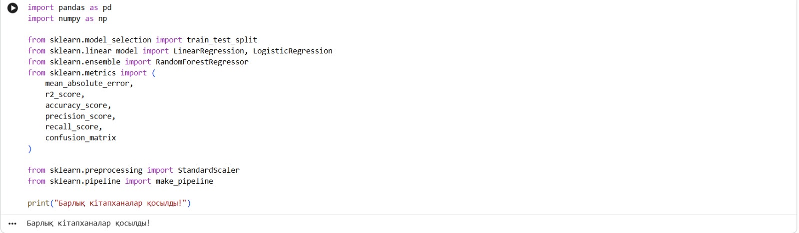
1-сурет. Google Colab ортасындағы нәтиже
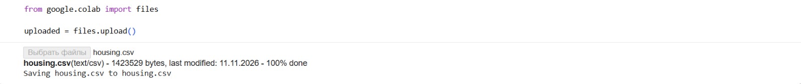
2-сурет. Google Colab ортасындағы нәтиже
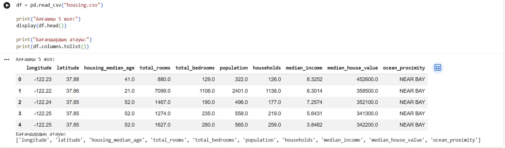
3-сурет. Google Colab ортасындағы нәтиже
2-қадам. Деректермен танысу
Кестенің өлшемі – 20 640 жол және 10 баған. total_bedrooms бағанында 207 бос мән бар, қалған бағандарда бос мән жоқ. median_house_value ең төменгі мәні – 14 999 доллар, орташа мәні – шамамен 206 855,82 доллар, ең жоғары мәні – 500 001 доллар.
ЖИ-ге сұраныс: «Кестенің өлшемін, әр бағандағы бос мәндерді және сандық бағандардың минимум, орташа, максимум мәндерін көрсетіп, нәтижені түсіндір».
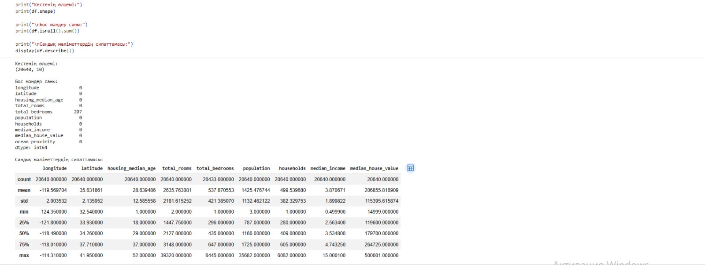
4-сурет. Google Colab ортасындағы нәтиже
3-қадам. Деректерді дайындау және бөлу
Баған атауларындағы артық бос орындар алынды. Бос мәндері бар жолдар жойылды. median_house_value мәні 500 000 доллардан төмен жолдар қалдырылды. ocean_proximity мәтіндік бағаны pd.get_dummies() арқылы сандық форматқа айналдырылды.
Тазалаудан кейін 19 448 жол қалды және 13 белгі алынды. Деректер 80/20 қатынасында бөлінді: оқыту жиынтығы – 15 558 жол, тестілеу жиынтығы – 3 890 жол. Оқыту жиынтығы модельді үйретеді, тестілеу жиынтығы оның жаңа деректердегі сапасын тексереді.
Кодта random_state=8 қолданылған. Бұл мән студенттің топ тізіміндегі нөміріне сәйкес болуы керек. Егер нұсқа нөмірі 8 болмаса, оны түзету қажет.
ЖИ-ге сұраныс: «Бос мәндері бар және бағасы 500 000 доллардан жоғары жолдарды алып таста, ocean_proximity бағанын санға айналдыр, деректерді 80/20 қатынасында бөл. random_state=8 болсын».
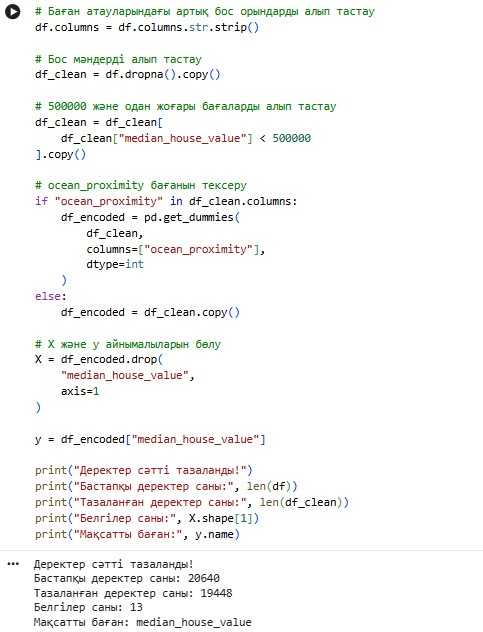
5-сурет. Google Colab ортасындағы нәтиже
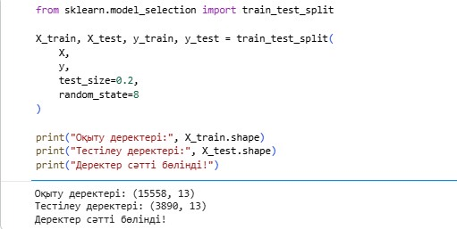
6-сурет. Google Colab ортасындағы нәтиже
4-қадам. Сызықтық регрессия моделін оқыту
LinearRegression моделі оқыту деректерімен үйретіліп, тестілеу жиынтығы үшін болжам жасалды. Нәтижелер: MAE = 43 508,39 доллар, R² = 0,6317. MAE болжам мен нақты бағаның орташа абсолюттік айырмасын көрсетеді. Демек, модель орта есеппен шамамен 43,5 мың долларға қателеседі. R² модель баға өзгерісінің шамамен 63,17%-ын түсіндіретінін білдіреді.
ЖИ-ге сұраныс: «LinearRegression моделін оқытып, тест деректеріне болжам жаса. MAE және R² көрсеткіштерін есептеп, мағынасын түсіндір».
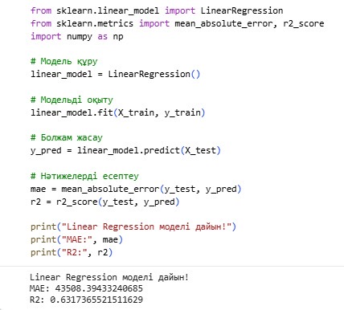
7-сурет. Google Colab ортасындағы нәтиже
5-қадам. Нақты баға мен болжамды салыстыру
Тестілеу жиынтығынан алынған 10 ауданның нақты бағасы, болжамы және абсолюттік қатесі салыстырылды. Ең үлкен қате 4-жолда: нақты баға – 361 100 доллар, болжам – 208 606,98 доллар, қате – 152 493,02 доллар.
Мұндай үлкен айырмашылық модель кейбір аудандардың ерекшеліктерін толық ескермегендіктен болуы мүмкін. Мысалы, орналасуы немесе инфрақұрылымы сияқты факторлар деректерде жеткілікті көрсетілмеуі ықтимал.
ЖИ-ге сұраныс: «Тестілеу жиынтығынан 10 аудан үшін нақты баға, болжам және абсолюттік қатені кестеге шығар. Ең үлкен қатені анықтап, себебін түсіндір».
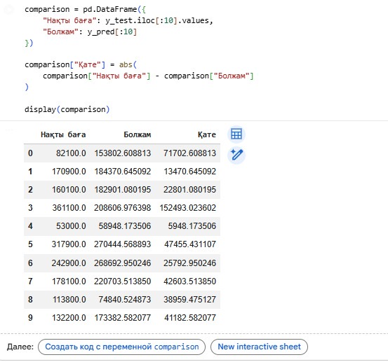
8-сурет. Google Colab ортасындағы нәтиже
6-қадам. Белгілердің маңыздылығын тексеру
median_income белгісін алып тастаған кезде MAE = 54 713,63 доллар, R² = 0,4352 болды. median_income және total_rooms белгілерін бірге алып тастағанда MAE = 59 909,54 доллар, R² = 0,3430 болды.
| Тәжірибе | MAE | R² |
|---|---|---|
| median_income белгісінсіз | 54 713,63 | 0,4352 |
| Екі белгісіз | 59 909,54 | 0,3430 |
Екі тәжірибеде де модель сапасы төмендеді. Демек, median_income және total_rooms белгілері тұрғын үй бағасын болжауға маңызды ақпарат береді.
ЖИ-ге сұраныс: «Алдымен median_income белгісінсіз, содан кейін median_income және total_rooms белгілерінсіз модельді оқытып, MAE және R² көрсеткіштерін салыстыр».
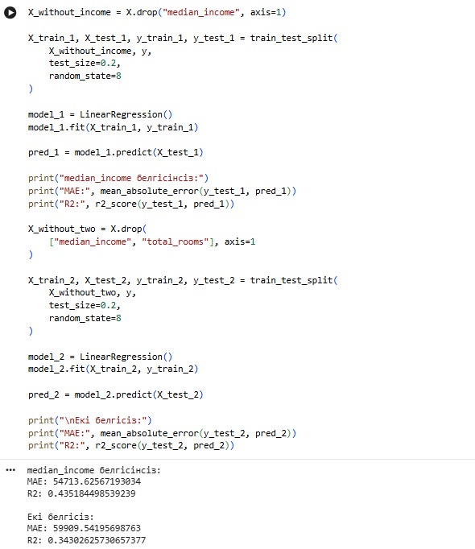
10-сурет. Google Colab ортасындағы нәтиже
7-қадам. Кездейсоқ орман моделін қолдану
RandomForestRegressor моделі 150 ағашпен оқытылды. Нәтижесі: MAE = 29 907,24 доллар, R² = 0,7881.
| Модель | MAE | R² |
|---|---|---|
| Linear Regression | 43 508,39 | 0,6317 |
| Random Forest | 29 907,24 | 0,7881 |
Random Forest дәлірек нәтиже көрсетті: MAE төмен, R² жоғары. Сондықтан осы тәжірибеде кездейсоқ орман моделі сызықтық регрессиядан жақсы жұмыс істеді.
ЖИ-ге сұраныс: «RandomForestRegressor моделін 150 ағашпен оқытып, MAE және R² есепте. Сызықтық регрессиямен бір кестеде салыстыр».
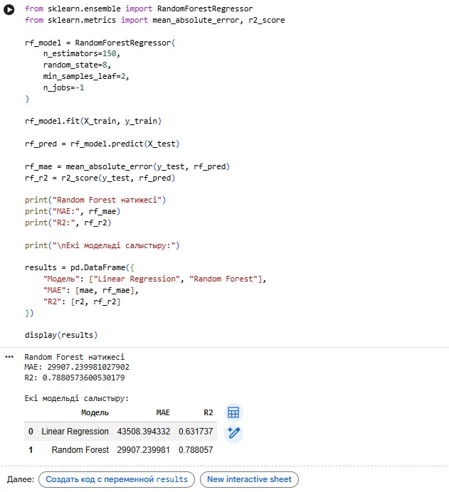
9-сурет. Google Colab ортасындағы нәтиже
8-қадам. Жаңа аудан үшін болжам жасау
Тестілеу жиынтығынан бір аудан таңдалып, Linear Regression моделі арқылы бастапқы баға болжанды. Содан кейін median_income мәні 2-ге арттырылып, екінші болжам алынды. Скриншоттағы нәтижелер бойынша бастапқы болжам – 153 802,61 доллар, ал табыс көрсеткіші артқаннан кейінгі болжам – 230 633,12 доллар. Айырмашылық 76 830,51 долларды құрайды. Бұл модель енгізілген белгілер өзгерген кезде болжамның да өзгеретінін көрсетеді. Алайда бұл нәтиже нақты нарықтағы бағаның міндетті түрде осынша өсетінін білдірмейді.
11-сурет. Жаңа аудан бағасын болжау нәтижесі
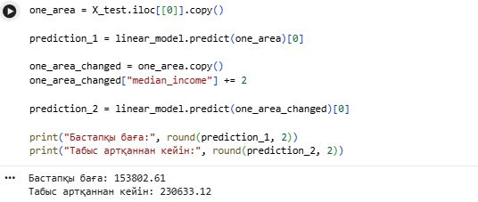
median_income көрсеткішінің артуы аудан тұрғындарының табысы жоғары екенін білдіреді. Модель өзгертілген деректер бойынша жаңа баға болжайды. Бірақ бұл нақты нарықтағы бағаның міндетті түрде дәл осылай өзгеретінін білдірмейді.
ЖИ-ге сұраныс: «Тестілеу жиынтығынан бір ауданды таңдап, Random Forest арқылы бастапқы бағаны болжа. median_income мәнін 2-ге арттырып, екінші болжам жаса және айырмасын түсіндір».
9-қадам. Жіктеу (классификация)
Бұл кезеңде median_price медианасынан жоғары аудандар «қымбат» (1), ал қалғандары «қымбат емес» (0) деп белгіленді. LogisticRegression моделі StandardScaler көмегімен оқытылып, тест жиынтығындағы аудандардың санаты болжанды. Скриншот бойынша Accuracy = 0,8355 (83,55%), Precision = 0,8303 (83,03%), Recall = 0,8431 (84,31%). Confusion Matrix нәтижесі: [[1611, 335], [305, 1639]].
12-сурет. Logistic Regression жіктеу моделінің нәтижесі
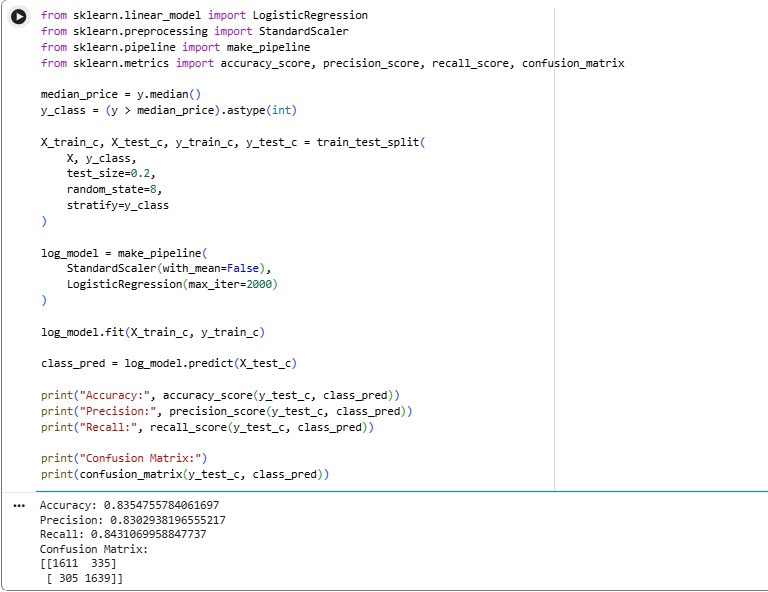
Accuracy – барлық нысандардың ішіндегі дұрыс жіктелгендерінің үлесі. Precision – модель «қымбат» деп белгілеген аудандардың қаншасы шынымен қымбат екенін көрсетеді. Recall – шын мәнінде қымбат аудандардың қаншасын модель анықтағанын көрсетеді. Алынған көрсеткіштер модельдің аудандарды екі санатқа бөлу сапасы шамамен 83–84% екенін көрсетеді. Confusion Matrix кестесі дұрыс және қате жіктелген нысандар санын көрсетеді.
ЖИ-ге сұраныс: «Бағасы жалпы медианадан жоғары аудандарды 1, қалғанын 0 деп белгіле. LogisticRegression моделін оқытып, accuracy, precision, recall және confusion_matrix есепте. Әр көрсеткішті түсіндір».
10-қадам. Қорытынды
Бұл практикалық жұмыста Google Colab ортасында California Housing деректер жиынтығын пайдаланып, тұрғын үй бағасын болжау жұмысы орындалды. Деректер тазаланып, оқыту және тестілеу жиынтықтарына бөлінді. Linear Regression және Random Forest модельдері құрылып, олардың нәтижелері салыстырылды. Random Forest моделі жақсырақ нәтиже көрсетті: MAE = 29 907,24 доллар, R² = 0,7881. Сонымен қатар Logistic Regression арқылы аудандар «қымбат» және «қымбат емес» санаттарына жіктелді. Жіктеу нәтижелері: Accuracy = 0,8355, Precision = 0,8303, Recall = 0,8431. Жаңа аудан үшін жасалған болжамда бастапқы баға 153 802,61 доллар болды, ал median_income мәнін 2-ге арттырғаннан кейін болжам 230 633,12 долларға өзгерді. Жұмыс барысында машиналық оқыту модельдерінің көмегімен тұрғын үй бағасын болжауға болатынын үйрендім. Практикалық жұмыс Python тілінде деректерді өңдеу, талдау және модель нәтижелерін бағалау дағдыларын дамытуға көмектесті. Дегенмен деректер 1990 жылғы мәліметтерге негізделгендіктен, модель нәтижесін қазіргі нарықтағы нақты баға ретінде қабылдауға болмайды.